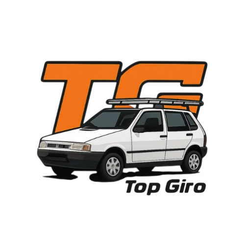

Simuladores de Corrida
Assetto Corsa

Assetto Corsa é um dos simuladores de corrida mais respeitados, conhecido pela física extremamente realista, suporte a mods e grande variedade de carros e pistas.

Assetto Corsa é um dos simuladores de corrida mais respeitados, conhecido pela física extremamente realista, suporte a mods e grande variedade de carros e pistas.

iRacing é um simulador focado em competição online profissional, utilizado até por pilotos reais para treinamento, com física avançada e campeonatos organizados.

Automobilista 2 é um simulador desenvolvido no Brasil que traz física detalhada, clima dinâmico e várias categorias do automobilismo mundial.

Forza Horizon 5 é um jogo de corrida com mundo aberto, gráficos incríveis e física realista que mistura diversão e realismo.

The Crew Motorfest oferece um mundo aberto gigantesco, carros reais e jogabilidade divertida, mantendo um bom nível de realismo.

Gran Turismo 7 é um simulador clássico com física avançada, carros reais detalhados e pistas famosas do mundo todo, ideal para quem ama realismo.